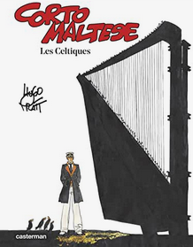

Les Celtiques est le quatrième album de la série Corto Maltese. Comme l'album précédent, il comporte six histoires, se déroulant de 1917 à 1918 dans différents lieux d'Europe, de Venise à l'Irlande en passant par les Cornouailles. Parues dans Pif Gadget de 1971 à 1972, les six histoires paraîtront en album en 1975.
Les lieux de l'action, différents à chaque histoire, permettent de retracer l'itinéraire du marin de fin 1917 à début 1918. La première, intitulée L'Ange à la fenêtre d'Orient, se déroule en Vénétie, en proie aux attaques autrichiennes, de-même que la deuxième, elle appelée Sous le drapeau d'argent, et prenant place lors de la bataille de Caporetto. La troisième histoire, Concert en O mineur pour harpe et nitroglycérine, change radicalement de décor, se déroulant dans les environs de Dublin et mettant en scène la lutte de groupes armés irlandais contre les forces britanniques. La quatrième histoire, Songe d'un matin d'hiver, prend un tour plus fantastique, se déroulant à Stonehenge et Tintagel, avec comme personnages diverses créatures du folklore de Grande-Bretagne. Côtes de nuit et roses de Picardie montre la mort du Baron Rouge, Manfred von Richtofen du point de vue du marin et d'un groupe de soldats australiens ; et enfin, Burlesque entre Zuydcoote et Bray-Dunes retrace les investigations du marin au sein d'une base de la Royal Air Force du Nord de la France pour résoudre une affaire dans-laquelle est impliqué son ami Caïn Groovesnore, devenu pilote dans la RAF. Apparaissent dans cet album diverses personnalités historiques: Manfed von Richtofen, Wilhelm Reinhard, Hermann Göring, et quelques autres sont évoqués par le biais de noms déformés: l'ambulancier Hernestway (pour Ernest Hemingway, ayant réellement prit part à des actions de la Croix-Rouge sur le front italien), et le grec Onatis (pour Aristote Onassis).
